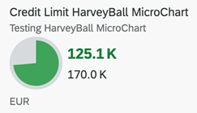

A single measure value is shown against a maximum value. For more information on this chart type, refer Samples documentation.
The UI.Chart Title property is used for the title.
The UI.Chart Description property is used for the subtitle.
<Annotation Term="UI.Chart" Qualifier="SpecificationWidthHarveyChart">
<Record>
<PropertyValue EnumMember="UI.ChartType/Pie" Property="ChartType" />
<PropertyValue Property="Title" String="Sold to Produced Harvey Chart" />
<PropertyValue Property="Description" String="Harvey Chart" />
<PropertyValue Property="Measures">
<Collection>
<PropertyPath>Sold</PropertyPath>
</Collection>
</PropertyValue>
<PropertyValue Property="MeasureAttributes">
<Collection>
<Record Type="UI.ChartMeasureAttributeType">
<PropertyValue Property="DataPoint" AnnotationPath="@UI.DataPoint" />
</Record>
</Collection>
</PropertyValue>
</Record>
</Annotation>
<Annotation Term="UI.DataPoint"> <Record> <PropertyValue Path="Sold" Property="Value" /> <PropertyValue Path="Produced" Property="MaximumValue" /> <PropertyValue Path="criticalityValue" Property="Criticality" /> </Record> </Annotation>
For semanting coloring, only the Criticality property is
supported.
Mandatory:
UI.Chart → ChartType:
“Pie”UI.Chart → MeasuresUI.Chart → MeasureAttributes →
DataPointUI.DataPoint→ MaximumValueUI.DataPoint →
Criticality